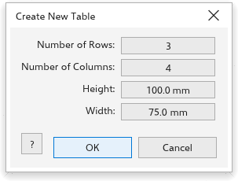

Questa pagina non è ancora tradotta ed è mostrata in inglese.
Tables
A table is an object made of rows and columns of cells, each of which can hold text and a fill. Draw tables with the Table tool and change them with the Table menu.
Creating a table
- Choose Table > Create New Table (or Object > Create > New Table). In the Create New Table dialog box, set the Number of Rows, the Number of Columns and the height and width (100 by 75 mm at first), and click OK. The table is placed in the middle of the page and selected.
- Or choose the Table tool and drag a rectangle: the table fills it, with equal rows and columns.

On the property bar of the Table tool, set the number of rows (3 at first) and columns (4 at first), the cell fill (none at first), and the border width and color. With a table selected, the fill and border change that table; otherwise they apply to the next table you draw.
Typing in cells
With the Table tool, click a cell and type. Text editing works as in any text: Ctrl+B, Ctrl+I and Ctrl+U format the selected characters, or the whole cell. Enter adds a line, Tab and Shift+Tab go to the next and previous cell, and the arrow keys step to the next cell at the edge of the text. A row grows when its text needs more height. Shift+click adds cells to the selection.
Changing rows and columns
The Table menu acts on the active cell and the selected cells:
- Insert: Row Above, Row Below, Column Left and Column Right. The new row or column takes the size of its neighbour.
- Select: Cell, Row, Column or Table.
- Delete: Row, Column or Table. A table keeps at least one row and one column.
- Distribute: Rows Evenly or Columns Evenly, keeping the size of the table.
- Merge Cells (Ctrl+M) makes the selected cells one cell, with their texts in order; Unmerge Cells splits it again, keeping the text and fill in the top left cell.
- Split into Rows and Split into Columns split the active row or column into two halves.
Converting text and tables
- Convert Text to Table: each line of the selected text becomes a row, and tabs separate the cells.
- Convert Table to Text: the cells are joined by tabs and the rows by line breaks.
The defaults of the tool are on the Table page of the tool options; see Tool options.